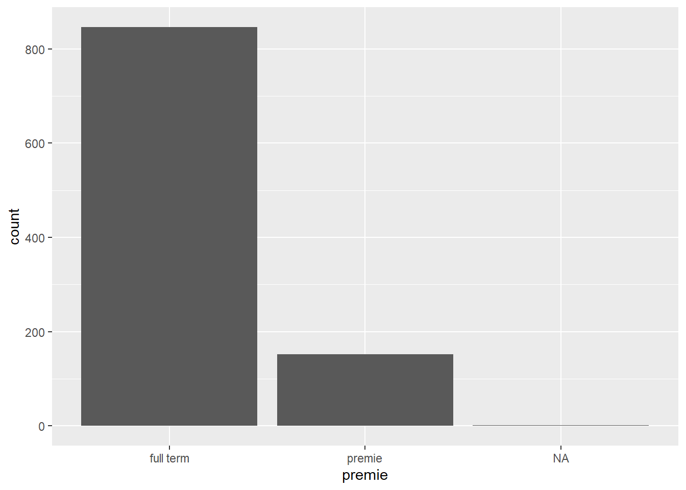
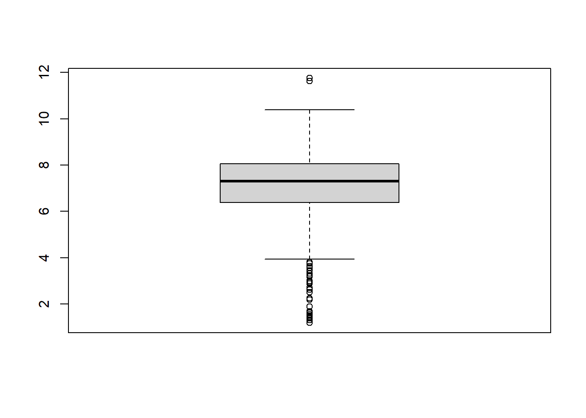
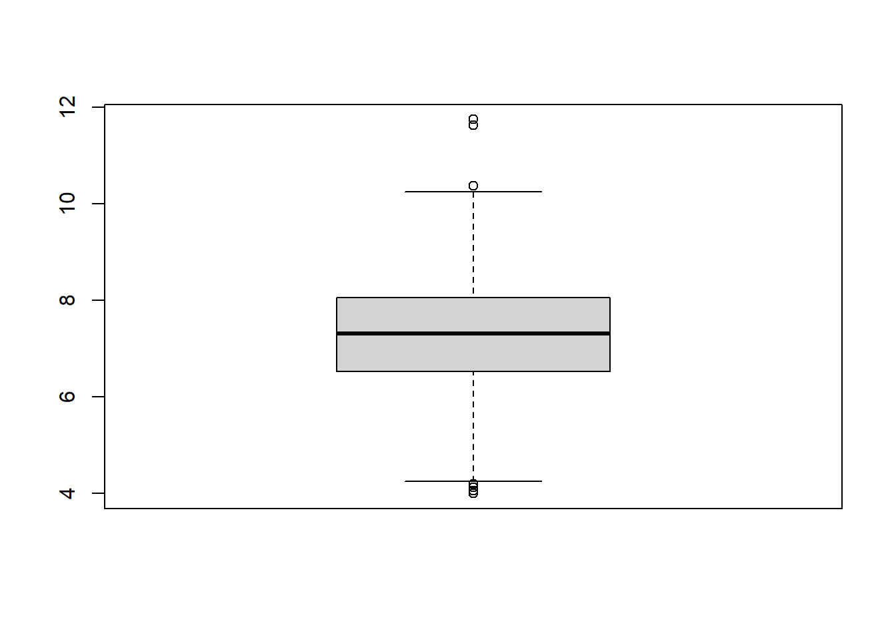

library(dplyr)
library(ggplot2)
ncbirths <- openintro::ncbirths5 Working with Data
In this lesson we will learn how to summarize data in a data frame, and to do basic data management tasks such as making new variables, recoding data and dealing with missing data. (Introduction Video)
5.0.1 Learning Objectives
After completing this lesson learners will be able to
- Summarize variables inside a data frame
- Make new variables inside a data frame.
- Selectively edit (and recode) data elements.
- Identify when data values are missing
- Summarize data in the presence of missing values.
5.0.2 Preparation
Prior to this lesson learners should
- Download the [05_dm_notes.Rmd] R markdown file and save into your
notes/Math130folder.- Open this in RStudio and ensure the first code chunk will run without error.
- Install the
ggplot2,openintroanddplyrpackages (this was done as part of lesson 02).
5.1 Missing Data (Video)
Missing data occurs when the value for a variable is missing. Think of it as a blank cell in an spreadsheet. Missing values can cause some problems during analysis, so let’s see how to detect missing values and how to work around them.
Consider the ncbirths data set, specifically the first column containing data on the father’s age (fage).
head(ncbirths)# A tibble: 6 × 13
fage mage mature weeks premie visits marital gained weight lowbirthweight
<int> <int> <fct> <int> <fct> <int> <fct> <int> <dbl> <fct>
1 NA 13 younger … 39 full … 10 not ma… 38 7.63 not low
2 NA 14 younger … 42 full … 15 not ma… 20 7.88 not low
3 19 15 younger … 37 full … 11 not ma… 38 6.63 not low
4 21 15 younger … 41 full … 6 not ma… 34 8 not low
5 NA 15 younger … 39 full … 9 not ma… 27 6.38 not low
6 NA 15 younger … 38 full … 19 not ma… 22 5.38 low
# ℹ 3 more variables: gender <fct>, habit <fct>, whitemom <fct>- R puts a
NAas a placeholder when the value for that piece of data is missing. - Missing data can be a result of many things: skip patterns in a survey (i.e. non-smokers don’t get asked how many packs per week they smoke), errors in data reads from a machine, etc.
Problem 1 R can’t do arithmetic on missing data. So 5 + NA = NA, and if you were to try to calculate the mean() of a variable, you’d also get NA.
mean(ncbirths$fage)[1] NAProblem 2 Some plots will show NA as it’s own category, which is undesirable.
ggplot(ncbirths, aes(premie))+geom_bar()
5.1.1 Identifying missing values
To find out how many values in a particular variable are missing we can use one of two approaches:
- Look at the raw data using
head()orstr(). This may not be helpful if there is no missing values in the first 6 rows, or if there is a large number of variables to look through. - Look at data summaries using
table()for categorical data andsummary()for numerical data. In the examples below you can see that entries for “NA” are included in the output.
table(ncbirths$habit, useNA="always")
nonsmoker smoker <NA>
873 126 1 summary(ncbirths$fage) Min. 1st Qu. Median Mean 3rd Qu. Max. NA's
14.00 25.00 30.00 30.26 35.00 55.00 171 5.1.2 Is it NA?
The function is.na() returns TRUE or FALSE for each element in the provided vector for whether or not that element is missing.
x <- c("green", NA, 3)
is.na(x)[1] FALSE TRUE FALSEIn this example, the vector x is created with three elements, the second one is missing. Calling the function is.na() on the vector x, results in three values, where only the second one is TRUE – meaning the second element is missing.
This can be extended to do things such as using the sum() function to count the number of missing values in a variable. Here we are nesting the functions is.na() is written entirely inside the sum() function.
sum(is.na(ncbirths$fage))[1] 171There are 171 records in this data set where the age for the father is not present.
5.2 Summarizing data (Video)
Two common methods used to summarize data are table() for categorical factor variables, and summary() for numeric variables.
5.3 Frequency Tables for categorical data
Frequency tables are used only on categorical data, and the table results show you how many records in the data set have that particular factor level.
You can create a frequency table by using the table() function. The useNA="always" argument tells R to always include an entry for missing values <NA>, even if there are none.
table(ncbirths$lowbirthweight, useNA="always")
low not low <NA>
111 889 0 The variable ncbirths$lowbirthweight has 111 records with a value of low, and 889 records with the value of not low.
5.3.1 Summary statistics for numerical data
Numerical variables can be summarized using statistics such as the min, max, mean and median. The function summary() prints out the five number summary, and includes the mean. This function also displays the number of missing values for that variable.
summary(ncbirths$visits) Min. 1st Qu. Median Mean 3rd Qu. Max. NA's
0.0 10.0 12.0 12.1 15.0 30.0 9 Mothers included in this data set visited the doctor on average 12.1 times during their pregnancy.
5.4 Data editing / Recoding (Video)
Sometimes we have a need to edit, or change data. We can change values of existing data by using logical statements.
To choose all observations (rows) of a data set, where a variable is equal to some value, you would type
data[data$variable==value] # example codeWe can use this method of selecting rows, to change data in those specific rows.
Example 1: Too low birthweight
Let’s look at the numerical distribution of birthweight of the baby.
summary(ncbirths$weight) Min. 1st Qu. Median Mean 3rd Qu. Max.
1.000 6.380 7.310 7.101 8.060 11.750 The value of 1 lb seems very low. The researchers you are working with decide that is a mistake and should be excluded from the data. We would then set all records where weight=1 to missing.
ncbirths$weight[ncbirths$weight==1] <- NA- The specific variable
ncbirths$weightis on the left side outside the[]. So just the variableweightis being changed. * Recall that bracket notation[]can be used to select rows where a certain logical statement is true. So[ncbirths$weight==1]will only show records whereweightis equal to 1. - Notice where the assignment arrow (
<-) is at. This code assigns the value ofNA(missing) to the variableweight, whereweight==1.
But what about other weights that aren’t quite as low as 1, but still unusually low? The boxplot below shows outlying values as dots on the low end of birthweight.
boxplot(ncbirths$weight)
Let’s set all birth weights less than 4 lbs to missing.
ncbirths$weight[ncbirths$weight < 4] <- NAIt is important to plot the data again, to make sure that there are no values below 4 now.
boxplot(ncbirths$weight)
5.5 Creating new variables (Video)
New variables should be added to the data frame. This can be done using $ sign notation.
The new variable you want to create goes on the left side of the assignment operator <-, and how you want to create that new variable goes on the right side.
data$new_variable <- creation statement5.5.1 Example: Row-wise difference between two existing variables
As a pregnancy progresses, both the mother and the baby gain weight. The variable gained is the total amount of weight the mother gained in her pregnancy. The variable weight is how much the baby weighed at birth.
The following code creates a new variable wtgain_mom the weight gained by the mother, that is not due to the baby by subtracting weight from gained.
ncbirths$wtgain_mom <- ncbirths$gained - ncbirths$weightTo confirm this variable was created correctly, we look at the data contained in three variables in question.
head(ncbirths[,c('gained', 'weight', 'wtgain_mom')])# A tibble: 6 × 3
gained weight wtgain_mom
<int> <dbl> <dbl>
1 38 7.63 30.4
2 20 7.88 12.1
3 38 6.63 31.4
4 34 8 26
5 27 6.38 20.6
6 22 5.38 16.65.5.2 Dichtomizing data
The ifelse() is hands down the easiest way to create a binary variable (dichotomizing, only 2 levels)
Let’s add a variable to identify if a mother in the North Carolina births data set was underage at the time of birth.
- We will define this as if the mothers age
mageis under 18. - We will create a new factor variable with two values:
underageandadult. - We will use the
ifelse()function.- It’s set of arguments are:
ifelse(logical, value if TRUE, value if FALSE) - The
logicalargument is a statement that resolves as abooleanvariable, as either TRUE or FALSE. - The second argument is what you want the resulting variable to contain if the logical argument is
TRUE - The last argument is what you want the resulting variable to contain if the logical argument is
FALSE
- It’s set of arguments are:
Make a new variable underage on the ncbirths data set. If mage is under 18, then the value of this new variable is underage, else it is labeled as adult.
ncbirths$underage <- ifelse(ncbirths$mage < 18, "underage", "adult")You should always make sure your code works as intended.
- First let’s look at the frequency table of
underageand see if records exist with the new categories, and if there are any missing values.
table(ncbirths$underage, useNA="always")
adult underage <NA>
963 37 0 - Next let’s check it against the value of
mageitself. Let’s look at all rows where mothers age is either 17 or 18mage %in% c(17,18), and only the columns of interest.
ncbirths[ncbirths$mage %in% c(17,18),c('mage', 'underage')]# A tibble: 57 × 2
mage underage
<int> <chr>
1 17 underage
2 17 underage
3 17 underage
4 17 underage
5 17 underage
6 17 underage
7 17 underage
8 17 underage
9 17 underage
10 17 underage
# ℹ 47 more rowsNotice I snuck a new operator in on you - %in%. This is a way you can provide a list of values (a.k.a a vector) and say “if the value of the variable I want is %in% any of these options in this vector…” do the thing.
5.6 Chaining using the pipe (Video)

The pipe is technically part of the magrittr package, but quite often we will use it in conjunction with functions from the dplyr package introduced in a later lesson. In fact it’s so commonly used with dplyr functions that it the magrittr package is loaded when you load dplyr (which is what we do here). However, the pipe operator is so useful in many other places that it deserves it’s own introduction here.
“and then….”
This is what I read to myself when using the pipe (%>%). The pipe lets you chain functions together, as long as the first argument of the function is a data.frame or a variable in a data.frame.
5.6.1 Example: Frequency tables & summary statistics
Earlier we saw that to create a frequency table for categorical variable we can type:
table(ncbirths$mature)
mature mom younger mom
133 867 This is also accomplished by first stating the variable, then piping in the summary function.
If you get an error message saying something like function not found, that is a message to you that you need to load the library. See the preparation section of these notes to remind yourself how to do this.
ncbirths$mature %>% table().
mature mom younger mom
133 867 ncbirths$mage %>% mean()[1] 27I read this as “Take the mage variable on the ncbirths data set, and then calculate the mean.”
The pipe %>% allows multiple steps to be chained together to execute a series of commands all at once. The usefulness of this approach will be apparent before the class is finished.